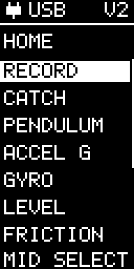
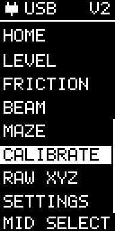

Buttons, power and versions
One layout for both versions
The full-width portrait screen has a top status row. Older yellow/blue panels show the left-hand pixels in yellow; the new panels show everything in white.
- Plug + USB: USB power is present. It does not indicate a viewer connection or charging completion.
- Battery + voltage: running on battery; voltage is rounded to one decimal place.
- V1 / V2: the detected sensor version. V2 adds the ±320 g accelerometer; both versions keep the low-g sensor and gyro.
Three buttons
Top moves up, middle selects, and bottom moves down. HOME is one scrolling list. Seven entries are visible; reaching the third entry from the top or bottom scrolls the list. Top/bottom wrap at the ends, and leaving an activity retains its selection. Activity screens show their own exit/reset controls.
Audio follows the firmware sound setting. When enabled, sounds do not block sampling.

HOME menu order
These entries share one list. RAW XYZ is last. Calibration always offers UP EXIT before saving.

Save a recording
Completed recordings remain in RAM while EggBert stays powered. Download and save the .egg file before erasing or switching off. Gentle Catch, Level, Gyro, Pendulum, Friction and Maze use live data rather than creating a downloadable five-second capture.